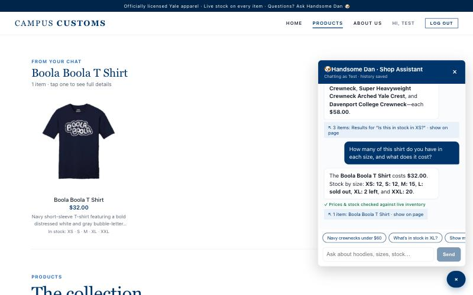
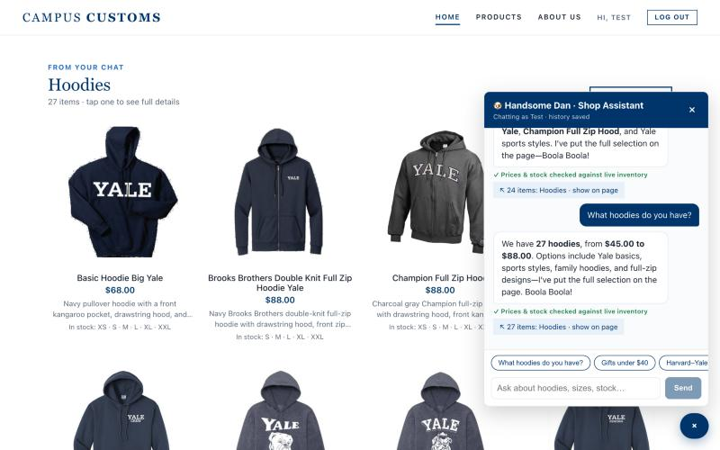
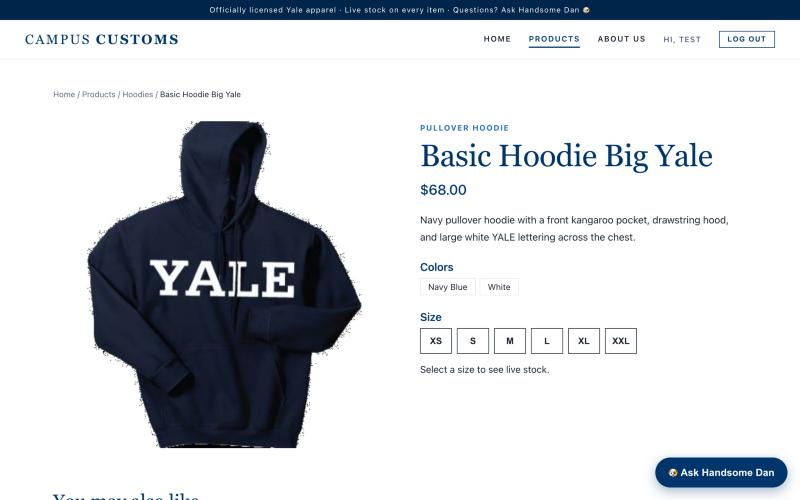
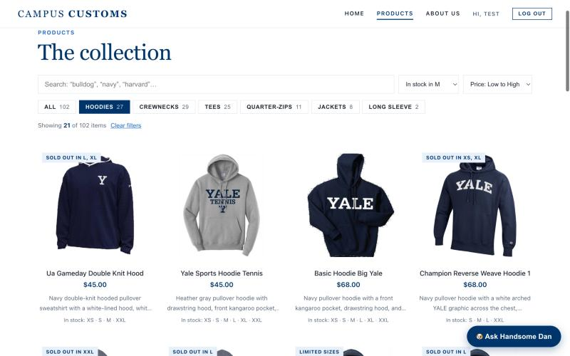
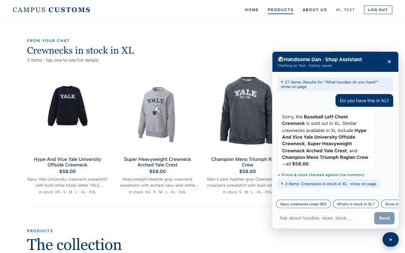

1. Chat checks an item's inventory level
✓ PASSOn the Boola Boola T Shirt product page, the shopper asked: "How many of this shirt do you have in each size, and what does it cost?"

check_stock tool and passed the fact-check, not from the model's memory.DB: catalogue ⋈ inventory | XS | S | M | L | XL | XXL | Price |
|---|---|---|---|---|---|---|---|
| boola-boola-t-shirt | 12 | 12 | 15 | 0 | 2 | 20 | $32.00 |
2. Dynamic search-result cards after a category question
✓ PASSFrom the Home page, the shopper asked: "What hoodies do you have?"

{title, product_ids}), and the site rendered a "Hoodies · 27 items" grid of product cards (image, name, price, short description, in-stock sizes) on the page. The reply's "27 hoodies, from $45.00 to $88.00" matches the DB (27 hoodie-type products, min $45, max $88).
/products/basic-hoodie-big-yale): large image, description, $68.00, colors, and size buttons.3. Usability feature: Products search, filter, and sort
✓ PASSOn Products, the shopper clicked Hoodies, chose In stock in M, and sorted Price: Low to High.

4. Bonus: sold-out alternatives + fact-check badge (Problem 9)
✓ PASSOn the Baseball Left Chest Crewneck page, the shopper asked: "Do you have this in XL?"

| Product (DB) | XL qty | Price |
|---|---|---|
| Baseball Left Chest Crewneck | 0 | $58.00 |
| Hype And Vice Yale University Offside Crewneck | 20 | $58.00 |
| Super Heavyweight Crewneck Arched Yale Crest | 25 | $58.00 |
| Champion Mens Triumph Raglan Crew | 2 | $58.00 |
Bug found and fixed during this check: the first "What hoodies do you have?" run said "23 hoodies" (the DB has 27) and showed only 24 cards. The fact-checker now also verifies item counts ("27 hoodies") against the search's total_matches, and the page-results cap was raised from 24 to 30 so a full category fits. The re-run above is correct.